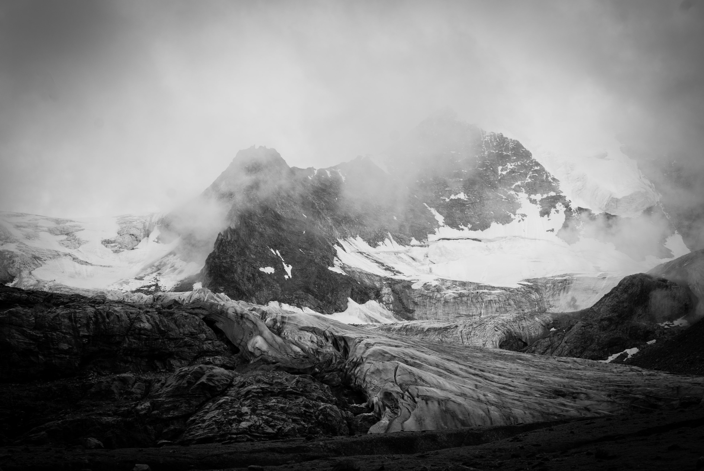
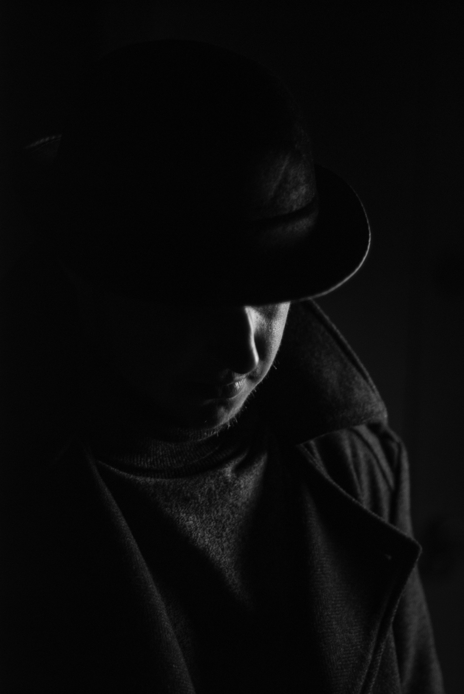
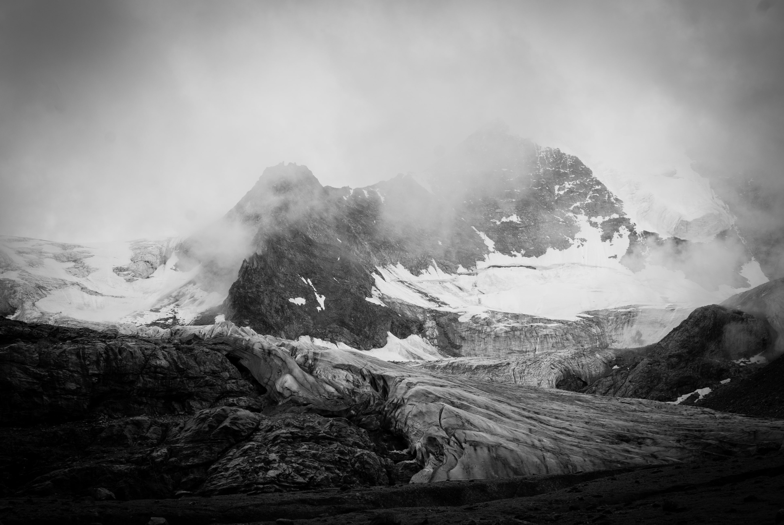
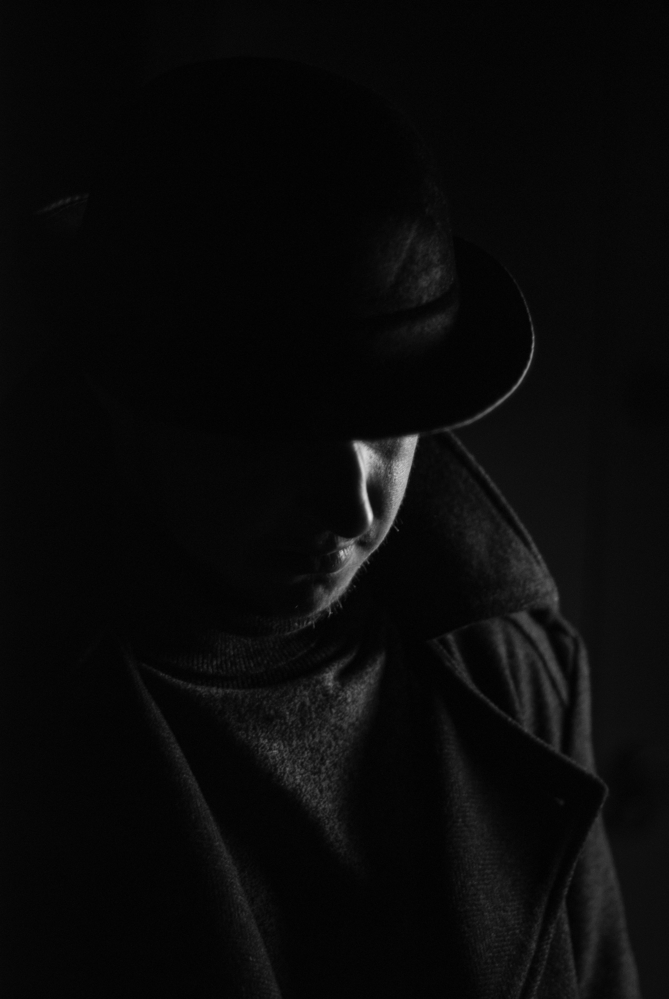

White Sands, USA.
White Sands, USA. Wolf Creek, USA.
Wolf Creek, USA.Arolla, Switzerland.
 Allgäu, Germany.
Allgäu, Germany. Richmond Park, UK.
Richmond Park, UK.Hull, UK.
 Hull, UK.
Hull, UK. Hull, UK.
Hull, UK. Street food market, Harbin, China.
Street food market, Harbin, China. Shenyang, China.
Shenyang, China. Harbin, China.
Harbin, China.
Now and then, I take photographs. Here are some shots I have collected over the years.
White Sands, USA.
Wolf Creek, USA.
Arolla, Switzerland.
Allgäu, Germany.
Richmond Park, UK.
Hull, UK.
Hull, UK.
Hull, UK.
Street food market, Harbin, China.
Shenyang, China.
Harbin, China.